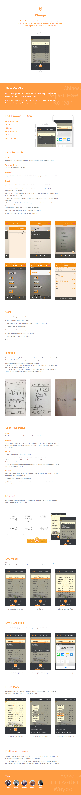

Waygo is an instant translation app that turns your iPhone camera into a portable translator for Asian languages. I worked with other Berkeley Innovation members to redesign the user experience of this app.
This semester, I worked in a team to redesign the Waygo iOS app and brainstormed features for the app on wearables such as Google Glass.
